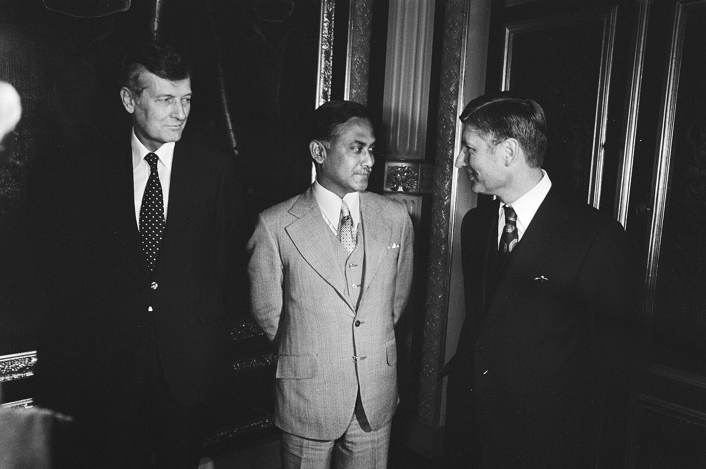
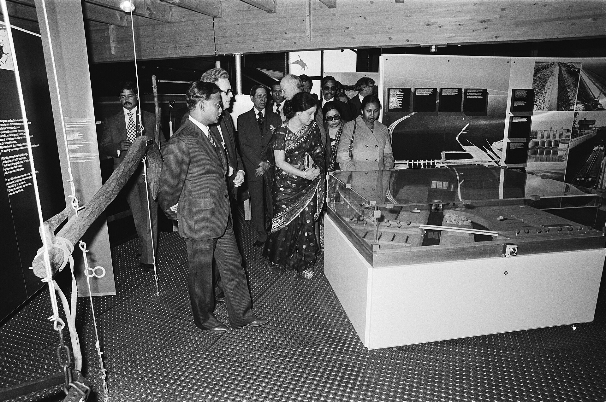
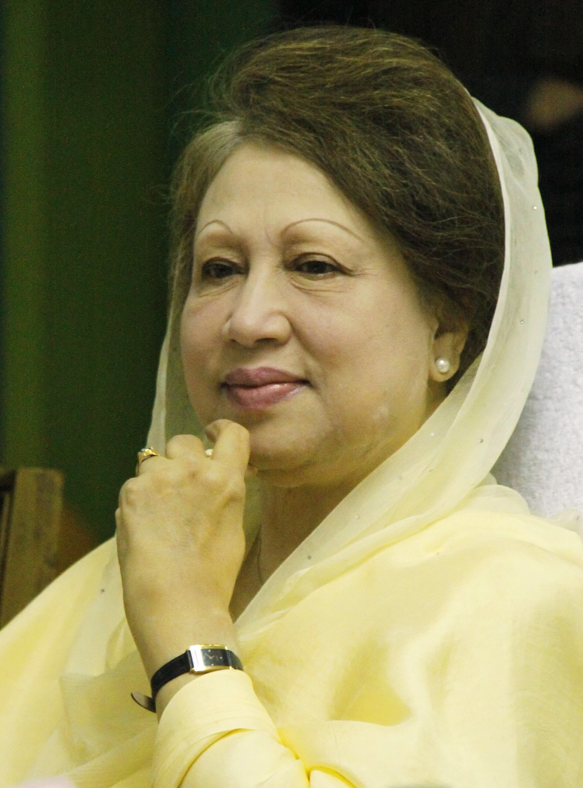

Skip to main content
জ
BANGLADESH HISTORY ARCHIVE
Explore our Websites
শহীদ জিয়া
MEMORIAL LIBRARY
Search
The Zia Family
Timeline
Photos & Videos
Artifacts
Research
About Us
News
জিয়া পরিবার
Breadcrumb
Home
ছবি ও ভিডিও
জিয়া পরিবার

রাষ্ট্রীয় সফর, নেদারল্যান্ডস ১৯৭৯ — Nationaal Archief (Anefo), CC0

রানি জুলিয়ানার সঙ্গে, ১৯৭৯ — CC0

বেগম খালেদা জিয়া, ২০১০ — CC BY-SA 3.0
তারেক রহমান, ২০০৫ — CC BY-SA 3.0
✕